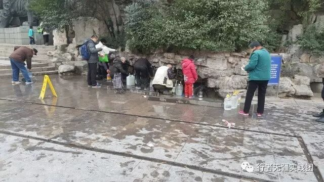
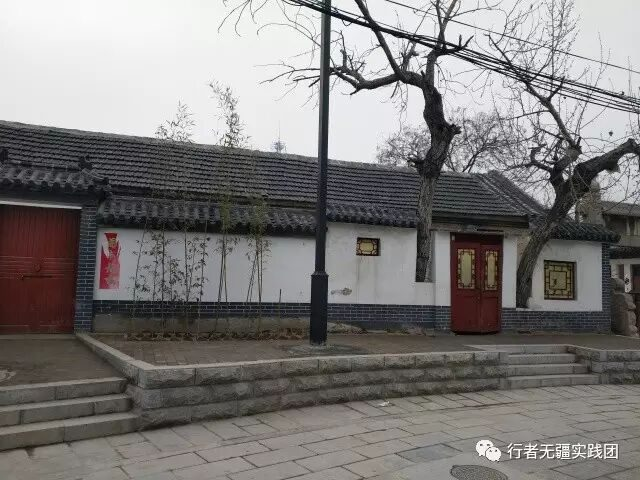

来自行者的第十三封信|文化寓于生活
文化寓于生活
文：王均黎
一座城，一次旅行，一场文化盛典。
五天的社会实践，走过了济南、泰安、曲阜，体味了泉水文化、泰山文化、孔子思想。几天的时间自然不能对当地文化有多么深刻的了解，却收获了对文化的关注。以往去各地，去参观各种景点，都是在欣赏美景，拍照留念，再则就是听听导游讲的来源、典故，从不会去思考历史景点背后所映射的文化。而经过这次社会实践，我意识到，一座城市的文化不仅仅体现在文物景点，更体现在百姓的日常生活中。

提到济南，便想到趵突泉。济南又名“泉城”，泉水自然是济南的文化名片，而不到济南却不知，济南市民也依赖着泉水，对泉水有着很深的情感。济南市民会打来泉水，用于生活用水，看着一汪汪清澈的泉水，小孩老人脸上都带着欢乐的笑容。在景点里，老爷爷看到有人往泉水里扔垃圾，投硬币，污染泉水时，便会很生气。这就是生活在泉城的人们，对泉水的爱护仿佛像是对自己的小孩子那般，不愿让他受到一点伤害。这也就是“泉水文化”在百姓生活中的体现。

泰山已是泰安的名片，每当提到泰山，泰安人想必都有着一种由心而发的自豪，想到泰山，都会想要像泰山一样伟岸挺拔吧！像是在岱庙遇到的随口编出顺口溜的爷爷，讲顺口溜时，铿锵有力。
曲阜的三孔已是闻名世界，可所有人都知道的只是孔子的思想，儒家文化，不知的是曲阜本地人在这种氛围里所受到的潜移默化的影响。曲阜的大街小巷都彰显着文化的底蕴，高耸的城墙、岸边的垂柳、“哒哒”的小马车、商人的吆喝声等等，都将我们带进了古时代。在这种氛围里，听着导游的讲解，静静地体味着孔夫子留下的文化的魅力。


我想，要深刻认识一个地域的文化，最好的方法就是在当地生活一段时间，感受细水长流般的日常生活，因为，最美的文化应当是寓于生活之中的吧。